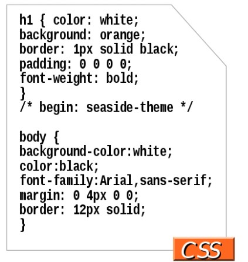

Hojas de Estilo en Cascada CSS Describe cómo deben verse las páginas web El código de vestimenta es fácil de encontrar, fácil de modificar, y puede cambiar rápidamente el aspecto completo de un sitio web Una hoja de estilo es un conjunto de reglas que define el formato de las páginas web o la forma en que se presenta el contenido. Un ejemplo es definir estilos de párrafo. El orden en que se establecen las reglas es tal que "caen en cascada" de un nivel a otro, de ahí el nombre Hoja de estilo en cascada (CSS). Este conjunto de reglas que define el formato de las páginas web o la forma en que se presenta el contenido, a diferencia del uso del código de lenguaje de marcado de hipertexto (HTML). En lugar de definir el estilo de cada elemento o etiqueta HTML, se puede hacer globalmente con CSS. Además, el uso de CSS permite separar el contenido del documento de la presentación del documento. CSS viene en tres tipos: Eterno: Un archivo separado Interno: En la parte superior de cada documento de la página web En línea: Justo al lado del texto que decora REFERENCIAS Durango, A. (2015). Diseño Web con CSS: 2ª Edición. IT Campus Academy. Frameworks CSS CSS framework es una colección de archivos CSS que se pueden aplicar a múltiples proyectos de desarrollo/diseño web para minimizar el tiempo dedicado a estructurar diseños, erradicar las pesadillas tipográficas y garantizar la compatibilidad con el navegador. Ciertamente simplifica el esfuerzo de desarrollo, pero todos estos marcos vienen con alguna carencia en lo que desea. O lo obligan a diseñar según la metodología del marco o vienen demasiado inflados y confusos. Pero siempre existe ese término medio si puede encontrar ese término medio y, en ese caso, estos marcos son realmente útiles. REFERENCIAS López, C. R. S. Desarrollo rápido de Aplicaciones Móviles Híbridas con HTML5, JavaScript y CSS. Rodríguez, R. A., Vera, P. M., Marko, I., Acevedo Zain, G., & Alderete, C. (2018). Análisis de frameworks web adaptativos basados en HTML5. In XX Workshop de Investigadores en Ciencias de la Computación (WICC 2018, Universidad Nacional del Nordeste).. 